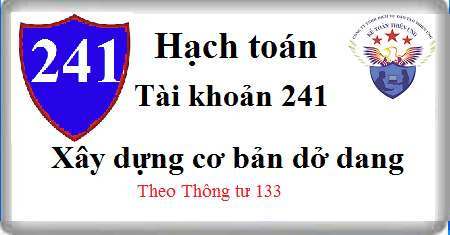

Hướng dẫn cách hạch toán Tài khoản 241 theo Thôn tư 133, cách hạch toán Xây dựng cơ bản dở dang như: Chi phí sửa chữa TSCĐ, chi phí chạy thử, chi phí lãi vay được vốn hóa.
1. Nguyên tắc kế toán Tài khoản 241 - Xây dựng cơ bản dở dang
a) Tài khoản này phản ánh chi phí thực hiện các dự án đầu tư XDCB (bao gồm chi phí mua sắm mới TSCĐ, xây dựng mới hoặc sửa chữa, cải tạo, mở rộng hay trang bị lại kỹ thuật công trình) và tình hình quyết toán dự án đầu tư XDCB ở các doanh nghiệp có tiến hành công tác mua sắm TSCĐ, đầu tư XDCB, sửa chữa lớn TSCĐ.
- Công tác đầu tư XDCB và sửa chữa lớn TSCĐ của doanh nghiệp có thể được thực hiện theo phương thức giao thầu hoặc tự làm. Ở các doanh nghiệp tiến hành đầu tư XDCB theo phương thức tự làm thì tài khoản này phản ánh cả chi phí phát sinh trong quá trình xây lắp, sửa chữa.
b) Chi phí thực hiện các dự án đầu tư XDCB là toàn bộ chi phí cần thiết để xây dựng mới hoặc sửa chữa, cải tạo, mở rộng hay trang bị lại kỹ thuật công trình được xác định theo quy định hiện hành, đồng thời phải phù hợp những yếu tố khách quan của thị trường trong từng thời kỳ và được thực hiện theo quy chế về quản lý đầu tư XDCB. Chi phí đầu tư XDCB, bao gồm:
- Chi phí xây dựng;
- Chi phí thiết bị;
- Chi phí bồi thường, hỗ trợ và tái định cư;
- Chi phí quản lý dự án;
- Chi phí tư vấn đầu tư xây dựng;
- Chi phí khác.
Tài khoản 241 được mở chi tiết theo từng công trình, hạng mục công trình và ở mỗi hạng mục công trình phải được hạch toán chi tiết từng nội dung chi phí đầu tư XDCB và được theo dõi lũy kế kể từ khi khởi công đến khi công trình, hạng mục công trình hoàn thành bàn giao đưa vào sử dụng.
c) Khi đầu tư XDCB các chi phí xây lắp, chi phí thiết bị thường tính trực tiếp cho từng công trình; Các chi phí quản lý dự án và chi phí khác thường được chi chung. Chủ đầu tư phải tiến hành tính toán, phân bổ chi phí quản lý dự án và chi phí khác cho từng công trình theo nguyên tắc:
- Nếu xác định được riêng các chi phí quản lý dự án và chi phí khác liên quan trực tiếp đến từng công trình thì tính trực tiếp cho công trình đó;
- Các chi phí quản lý dự án và chi phí chung có liên quan đến nhiều công trình mà không tính trực tiếp được cho từng công trình thì đơn vị được quyền phân bổ theo những tiêu thức phù hợp nhất với từng công trình.
d) Chi phí sửa chữa, bảo dưỡng, duy trì cho TSCĐ hoạt động bình thường được hạch toán trực tiếp vào chi phí sản xuất, kinh doanh trong kỳ. Đối với các TSCĐ theo yêu cầu kỹ thuật phải sửa chữa, bảo trì, duy tu định kỳ mà không làm tăng giá trị tài sản, doanh nghiệp được trích lập dự phòng phải trả và tính trước vào chi phí sản xuất, kinh doanh để có nguồn trang trải hoặc được phân bổ dần theo quy định khi việc sửa chữa, bảo trì phát sinh.
đ) Chủ đầu tư xây dựng bất động sản sử dụng tài khoản này để tập hợp chi phí xây dựng TSCĐ hoặc bất động sản đầu tư. Trường hợp bất động sản xây dựng sử dụng cho nhiều mục đích (làm văn phòng, cho thuê hoặc để bán, ví dụ như tòa nhà chung cư hỗn hợp) thì kế toán vẫn tập hợp chi phí phát sinh liên quan trực tiếp tới việc đầu tư xây dựng trên TK 241. Khi công trình, dự án hoàn thành bàn giao đưa vào sử dụng, kế toán căn cứ cách thức sử dụng tài sản trong thực tế để kết chuyển chi phí đầu tư xây dựng phù hợp với bản chất của từng loại tài sản.
e) Đối với hoạt động XDCB dở dang mà phải thanh toán cho nhà thầu bằng ngoại tệ: Chi phí XDCB dở dang được ghi nhận theo tỷ giá giao dịch thực tế tại thời điểm công trình XDCB hoàn thành, nghiệm thu đưa vào sử dụng. Trường hợp doanh nghiệp ứng trước cho nhà thầu bằng ngoại tệ thì chi phí XDCB dở dang tương ứng với số tiền ứng trước được ghi nhận theo tỷ giá giao dịch thực tế tại thời điểm ứng trước, chi phí XDCB dở dang tương ứng với số tiền còn lại được ghi nhận theo tỷ giá giao dịch thực tế tại thời điểm công trình XDCB hoàn thành, nghiệm thu đưa vào sử dụng.
g) Chênh lệch tỷ giá hối đoái phát sinh từ quá trình đầu tư xây dựng cơ bản trong giai đoạn trước hoạt động hoặc khi doanh nghiệp đã đi vào hoạt động (kể cả việc đầu tư mới hoặc đầu tư mở rộng) đều được tính ngay vào doanh thu hoạt động tài chính (nếu lãi) hoặc chi phí tài chính (nếu lỗ) tại thời điểm phát sinh.
h) Trường hợp dự án đầu tư bị hủy bỏ, doanh nghiệp phải tiến hành thanh lý và thu hồi các chi phí đã phát sinh của dự án. Phần chênh lệch giữa chi phí đầu tư thực tế phát sinh và số thu từ việc thanh lý được ghi nhận vào chi phí khác hoặc xác định trách nhiệm bồi thường của tổ chức, cá nhân để thu hồi.
i) Các chi phí khác phát sinh như chi phí lãi vay được vốn hóa, chi phí đấu thầu (sau khi bù trừ với số tiền thu từ việc bán hồ sơ thầu), chi phí tháo dỡ hoàn trả mặt bằng (sau khi bù trừ với số phế liệu có thể thu hồi) được hạch toán vào chi phí xây dựng cơ bản dở dang.
k) Trường hợp hoạt động sản xuất thử không tạo ra sản phẩm thì toàn bộ chi phí chạy thử được hạch toán vào chi phí xây dựng cơ bản dở dang; Trường hợp hoạt động sản xuất thử tạo ra sản phẩm sản xuất thử thì toàn bộ chi phí chạy thử có tải để sản xuất ra sản phẩm sản xuất thử được tập hợp trên TK 154 - Chi phí sản xuất, kinh doanh dở dang, phần chênh lệch giữa chi phí sản xuất thử với số thu từ việc bán sản phẩm sản xuất thử được hạch toán vào chi phí xây dựng cơ bản dở dang.
Tài khoản 241 - Xây dựng cơ bản dở dang, có 3 tài khoản cấp 2:
- Tài khoản 2411 - Mua sắm TSCĐ: Phản ánh chi phí mua sắm TSCĐ và tình hình quyết toán chi phí mua sắm TSCĐ trong trường hợp phải qua lắp đặt, chạy thử trước khi đưa vào sử dụng (kể cả mua TSCĐ mới hoặc đã qua sử dụng). Nếu mua sắm TSCĐ về phải đầu tư, trang bị thêm mới sử dụng được thì mọi chi phí mua sắm, lắp đặt và trang bị thêm cũng được phản ánh vào tài khoản này.
- Tài khoản 2412 - Xây dựng cơ bản: Phản ánh chi phí đầu tư XDCB và tình hình quyết toán vốn đầu tư XDCB. Tài khoản này được mở chi tiết cho từng công trình, hạng mục công trình (theo từng đối tượng tài sản hình thành qua đầu tư) và ở mỗi đối tượng tài sản phải theo dõi chi tiết từng nội dung chi phí đầu tư XDCB.
- Tài khoản 2413 - Sửa chữa lớn TSCĐ: Phản ánh chi phí sửa chữa lớn TSCĐ và tình hình quyết toán chi phí sửa chữa lớn TSCĐ. Trường hợp sửa chữa thường xuyên TSCĐ thì không hạch toán vào tài khoản này mà tính thẳng vào chi phí sản xuất, kinh doanh trong kỳ.
2. Kết cấu và nội dung Tài khoản 241 - Xây dựng cơ bản dở dang
Bên Nợ:
- Chi phí đầu tư XDCB, mua sắm, sửa chữa lớn TSCĐ phát sinh (TSCĐ hữu hình và TSCĐ vô hình);
- Chi phí mua sắm bất động sản đầu tư (trường hợp cần có giai đoạn đầu tư xây dựng);
- Chi phí đầu tư XDCB bất động sản đầu tư;
- Chi phí cải tạo, nâng cấp, sửa chữa lớn TSCĐ, BĐSĐT.
Bên Có:
- Giá trị TSCĐ hình thành qua đầu tư XDCB, mua sắm đã hoàn thành đưa vào sử dụng;
- Giá trị bất động sản đầu tư hình thành qua đầu tư XDCB đã hoàn thành;
- Giá trị công trình bị loại bỏ và các khoản chi phí duyệt bỏ khác kết chuyển khi quyết toán được duyệt;
- Kết chuyển chi phí cải tạo, nâng cấp, sửa chữa lớn TSCĐ, BĐSĐT phát sinh sau ghi nhận ban đầu vào các tài khoản có liên quan khi quyết toán được duyệt.
Số dư Nợ:
- Chi phí dự án đầu tư xây dựng và sửa chữa lớn TSCĐ, BĐSĐT dở dang;
- Giá trị công trình xây dựng và sửa chữa lớn TSCĐ, BĐSĐTT đã hoàn thành nhưng chưa bàn giao đưa vào sử dụng hoặc quyết toán chưa được duyệt;
- Giá trị bất động sản đầu tư đang đầu tư xây dựng dở dang.
3. Cách hạch toán Xậy dựng cơ bản dở dang Tài khoản 214
3.1. Kế toán chi phí đầu tư XDCB
3.1.1. Trường hợp ứng trước tiền cho nhà thầu
a) Trường hợp ứng trước bằng Đồng tiền ghi sổ kế toán:
- Ghi nhận số tiền ứng trước cho nhà thầu bằng Đồng tiền ghi sổ kế toán, ghi;
Nợ Tài khoản 331 Phải trả người bán
Có TK 112 Tiền gửi ngân hàng
- Khi nghiệm thu khối lượng XDCB hoàn thành, kế toán ghi nhận chi phí XDCB dở dang đối với số tiền đã ứng trước, ghi:
Nợ TK 241 - XDCB dở dang
Có TK 331 - Phải trả cho người bán.
b) Trường hợp ứng trước bằng ngoại tệ:
- Ghi nhận số tiền ứng trước cho nhà thầu bằng ngoại tệ theo tỷ giá giao dịch thực tế tại thời điểm ứng trước, ghi;
+ Trường hợp bên Có TK tiền sử dụng tỷ giá ghi sổ:
Nợ TK 331 - Phải trả cho người bán (tỷ giá giao dịch thực tế tại thời điểm ứng trước)
Nợ TK 635 - Chi phí tài chính (nếu phát sinh lỗ tỷ giá)
Có Tài Khoản 111, 112 (1112) (1122) (tỷ giá ghi sổ)
Có TK 515 - Doanh thu hoạt động tài chính (nếu phát sinh lãi tỷ giá).
+ Trường hợp bên Có TK tiền sử dụng tỷ giá giao dịch thực tế:
Nợ TK 331 – Phải trả cho người bán
Có các TK 111, 112 (1112) (1122)
Ghi nhận chênh lệch tỷ giá: Khoản chênh lệch tỷ giá phát sinh trong kỳ được ghi nhận ngay tại thời điểm ứng trước tiền cho nhà thầu hoặc ghi nhận định kỳ tùy theo đặc điểm hoạt động kinh doanh và yêu cầu quản lý của DN.
(+) Nếu phát sinh lỗ chênh lệch tỷ giá, ghi:
Nợ TK 635 - Chi phí tài chính (chênh lệch giữa tỷ giá ghi sổ của tài khoản tiền lớn hơn tỷ giá giao dịch thực tế tại thời điểm ứng trước )
Có các TK 111, 112 (1112) (1122)
(+) Nếu phát sinh lãi chênh lệch tỷ giá, ghi:
Nợ các TK 111, 112 (1112) (1122) (chênh lệch giữa tỷ giá ghi sổ của tài khoản tiền nhỏ hơn tỷ giá giao dịch thực tế tại thời điểm ứng trước ).
Có TK 515 - Doanh thu hoạt động tài chính
- Khi nghiệm thu khối lượng XDCB hoàn thành, chi phí XDCB dở dang tương ứng với số tiền ứng trước được ghi nhận theo tỷ giá giao dịch thực tế tại thời điểm ứng trước, chi phí XDCB dở dang tương ứng với số tiền còn lại được ghi nhận theo tỷ giá giao dịch thực tế tại thời điểm công trình XDCB hoàn thành, nghiệm thu đưa vào sử dụng, ghi:
Nợ TK 241 - XDCB dở dang
Có TK 331 - Phải trả cho người bán.
3.1.2. Nhận khối lượng XDCB, khối lượng sửa chữa TSCĐ hoàn thành do bên nhận thầu bàn giao, nếu thuế GTGT đầu vào được khấu trừ, căn cứ hợp đồng giao thầu, biên bản nghiệm thu khối lượng XDCB hoàn thành, hóa đơn, ghi:
Nợ TK 241 - XDCB dở dang (2412, 2413)
Nợ TK 133 Thuế GTGT được khấu trừ (1332) (nếu có)
Có TK 331 - Phải trả cho người bán.
- Nếu thuế GTGT đầu vào không được khấu trừ thì giá trị chi phí đầu tư xây dựng cơ bản dở dang bao gồm cả thuế GTGT.
3.1.3. Khi mua thiết bị đầu tư XDCB, nếu thuế GTGT đầu vào được khấu trừ, căn cứ hóa đơn, phiếu nhập kho, ghi:
Nợ TK 152 Nguyên vật liệu (giá mua chưa có thuế GTGT)
Nợ TK 133 - Thuế GTGT được khấu trừ (1332)
Có TK 331 - Phải trả cho người bán (tổng giá thanh toán).
Trường hợp chuyển thẳng thiết bị không cần lắp đến địa điểm thi công giao cho bên nhận thầu, ghi:
Nợ TK 241 - XDCB dở dang
Nợ TK 133 - Thuế GTGT được khấu trừ (1332)
Có TK 331 - Phải trả cho người bán
Có TK 151 Hàng mua đang đi đường.
3.1.4. Trả tiền cho người nhận thầu, người cung cấp vật tư, hàng hóa, dịch vụ có liên quan đến đầu tư XDCB, ghi:
Nợ TK 331 - Phải trả cho người bán
Có các TK 111, 112,...
3.1.5. Xuất thiết bị đầu tư XDCB giao cho bên nhận thầu:
a) Đối với thiết bị không cần lắp, ghi:
Nợ TK 241 - XDCB dở dang
Có TK 152 - Nguyên liệu, vật liệu.
b) Đối với thiết bị cần lắp:
- Khi xuất thiết bị giao cho bên nhận thầu, kế toán chỉ theo dõi chi tiết thiết bị đưa đi lắp.
- Khi có khối lượng lắp đặt hoàn thành của bên B bàn giao, được nghiệm thu và chấp nhận thanh toán, thì giá trị thiết bị đưa đi lắp mới được tính vào chi phí đầu tư XDCB, ghi:
Nợ TK 241 - XDCB dở dang (2412)
Có TK 152 - Nguyên liệu, vật liệu.
3.1.6. Khi phát sinh các chi phí khác, như chi phí lãi vay, chi phí phát hành trái phiếu được vốn hóa, chi phí đấu thầu, (sau khi bù trừ với số tiền thu từ việc bán hồ sơ thầu), chi phí tháo dỡ hoàn trả mặt bằng (sau khi bù trừ với số phế liệu có thể thu hồi)... ghi:
Nợ TK 241 - XDCB dở dang (2412)
Nợ TK 133 - Thuế GTGT được khấu trừ (1332) (nếu có)
Có các TK 111, 112, 331 ... hoặc
Có TK 335 Chi phí phải trả
Số tiền bán hồ sơ thầu sau khi bù trừ với chi phí đấu thầu, nếu còn thừa được kế toán giảm chi phí đầu tư xây dựng (ghi vào bên Có TK 2412).
3.1.7. Khoản tiền phạt nhà thầu thu được về bản chất làm giảm số phải thanh toán cho nhà thầu, ghi:
Nợ các TK 112, 331
Có TK 241 - XDCB dở dang.
3.1.8. Các khoản chênh lệch tỷ giá phát sinh trong quá trình đầu tư XDCB (kể cả giai đoạn trước hoạt động) được ghi nhận vào doanh thu hoạt động tài chính (nếu lãi) hoặc chi phí tài chính (nếu lỗ) tại thời điểm phát sinh:
- Nếu phát sinh lãi tỷ giá, ghi:
Nợ các TK liên quan
Có TK 515 - Doanh thu hoạt động tài chính.
- Nếu phát sinh lỗ tỷ giá, ghi:
Nợ TK 635 - Chi phí tài chính
Có các TK liên quan.
3.1.9. Đối với chi phí chạy thử và số thu từ việc bán sản phẩm sản xuất thử thì thực hiện như sau:
a) Đối với chi phí chạy thử không sản xuất ra sản phẩm thử:
Nợ TK 241 - XDCB dở dang
Có các TK liên quan.
b) Đối với chi phí sản xuất thử và số thu từ bán sản phẩm sản xuất thử:
- Khi phát sinh chi phí chạy thử có tải để sản xuất ra sản phẩm thử, kế toán tập hợp toàn bộ chi phí, ghi
Nợ TK 154 - Chi phí sản xuất kinh doanh dở dang
Có các TK liên quan.
- Khi nhập kho sản phẩm sản xuất thử, ghi:
Nợ Tài khoản 155 Thành phẩm
Có TK 154 - Chi phí sản xuất kinh doanh dở dang.
- Khi xuất bán sản phẩm sản xuất thử:
Nợ các TK 111, 112, 131
Có TK 155 - Thành phẩm
Có TK 154 - Chi phí SXKD dở dang (bán ngay không qua nhập kho)
Có TK 3331 Thuế GTGT phải nộp (nếu có).
- Kết chuyển phần chênh lệch giữa chi phí sản xuất thử và số thu từ việc bán sản phẩm sản xuất thử:
+ Trường hợp chi phí sản xuất thử cao hơn số thu từ việc bán sản phẩm sản xuất thử, kế toán kết chuyển phần chênh lệch để ghi tăng chi phí đầu tư XDCB dở dang, ghi:
Nợ TK 241 - XDCB dở dang
Có TK 154 - Chi phí SXKD dở dang.
+ Trường hợp chi phí sản xuất thử nhỏ hơn số thu từ việc bán sản phẩm sản xuất thử, kế toán kết chuyển phần chênh lệch để ghi giảm chi phí đầu tư XDCB dở dang, ghi:
Nợ TK 154 - Chi phí SXKD dở dang
Có TK 241 - XDCB dở dang.
3.1.10. Khi công trình hoàn thành, việc nghiệm thu tổng thể đã được thực hiện xong, tài sản được bàn giao và đưa vào sử dụng: Nếu quyết toán được duyệt ngay thì căn cứ vào giá trị tài sản hình thành qua đầu tư được duyệt để ghi sổ. Nếu quyết toán chưa được phê duyệt thì ghi tăng giá trị của tài sản hình thành qua đầu tư theo giá tạm tính (giá tạm tính là chi phí thực tế đã bỏ ra để có được tài sản, căn cứ vào TK 241 để xác định giá tạm tính). Cả 2 trường hợp đều ghi như sau:
Nợ các Tài khoản 211, 217
Nợ TK 155 - Thành phẩm (sau khi hoàn thành có một phần BĐS dùng để bán mà trước đây chưa hạch toán riêng được trên TK 154)
Có TK 241 - XDCB dở dang (giá được duyệt hoặc giá tạm tính).
- Trường hợp công trình đã hoàn thành, nhưng chưa làm thủ tục bàn giao tài sản để đưa vào sử dụng, đang chờ lập hoặc duyệt quyết toán thì kế toán phải mở sổ chi tiết tài khoản 241 "XDCB dở dang" theo dõi riêng công trình hoàn thành chờ bàn giao và duyệt quyết toán.
3.1.11. Khi quyết toán vốn đầu tư XDCB hoàn thành được duyệt thì kế toán điều chỉnh lại giá tạm tính theo giá trị tài sản được duyệt, ghi;
- Nếu giá trị tài sản hình thành qua đầu tư XDCB được duyệt có giá trị thấp hơn giá tạm tính:
Nợ TK 138 Phải thu khác (chi phí duyệt bỏ phải thu hồi)
Có các TK 211, 217, 155.
- Nếu giá trị tài sản hình thành qua đầu tư XDCB được duyệt có giá trị cao hơn giá tạm tính:
Nợ các TK 211, 217, 155.
Có các TK liên quan.
- Nếu TSCĐ hình thành bằng quỹ phúc lợi và dùng vào mục đích phúc lợi, khi chủ đầu tư duyệt quyết toán vốn đầu tư, kế toán ghi tăng quỹ phúc lợi đã hình thành TSCĐ:
Nợ TK 3532 Quỹ khen thưởng, phúc lợi
Có TK 3533 - Quỹ phúc lợi đã hình thành TSCĐ.
3.1.12. Trường hợp dự án đầu tư bị hủy bỏ hoặc thu hồi, kế toán thanh lý dự án và thu hồi chi phí đầu tư. Phần chênh lệch giữa chi phí đầu tư và số thu từ việc thanh lý được phản ánh vào chi phí khác hoặc xác định trách nhiệm bồi thường của tổ chức, cá nhân, ghi:
Nợ các TK 111, 112 - Số thu từ việc thanh lý dự án
Nợ TK 138 - Phải thu khác (Số tổ chức, cá nhân phải bồi thường)
Nợ TK 811 - Chi phí khác (Số được tính vào chi phí)
Có TK 241 - XDCB dở dang.
3.2. Kế toán sửa chữa TSCĐ
Công tác sửa chữa TSCĐ của doanh nghiệp cũng có thể tiến hành theo phương thức tự làm hoặc giao thầu.
a) Khi chi phí sửa chữa TSCĐ phát sinh được tập hợp vào bên Nợ TK 241 "XDCB dở dang" (2413) và được chi tiết cho từng công trình, công việc sửa chữa TSCĐ. Căn cứ chứng từ phát sinh chi phí để hạch toán:
- Nếu thuế GTGT đầu vào được khấu trừ, ghi:
Nợ TK 241 - XDCB dở dang (2413) (giá mua chưa có thuế GTGT)
Nợ TK 133 - Thuế GTGT được khấu trừ (1332)
Có các TK 111, 112, 152, 214,... (tổng giá thanh toán).
- Nếu thuế GTGT đầu vào không được khấu trừ thì chi phí sửa chữa TSCĐ bao gồm cả thuế GTGT, ghi:
Nợ TK 241 - XDCB dở dang (2413) (tổng giá thanh toán)
Có các 111, 112, 152, 214, 334... (tổng giá thanh toán).
b) Khi công trình sửa chữa hoàn thành, nếu không đủ điều kiện ghi tăng nguyên giá TSCĐ, BĐSĐT, ghi:
Nợ TK 242 Chi phí trả trước (nếu chi phí sửa chữa lớn TSCĐ được phân bổ dần)
Nợ TK 352 - Dự phòng phải trả (nếu trích trước chi phí sửa chữa định kỳ)
Có TK 241 - XDCB dở dang (2413).
- Trường hợp sửa chữa cải tạo, nâng cấp thỏa mãn điều kiện ghi tăng nguyên giá TSCĐ, BĐSĐT, ghi:
Nợ TK 211, 217.
Có TK 241 - XDCB dở dang (2413).
Kế toán Diệu Tâm xin chúc bạn làm tốt công việc kế toán
